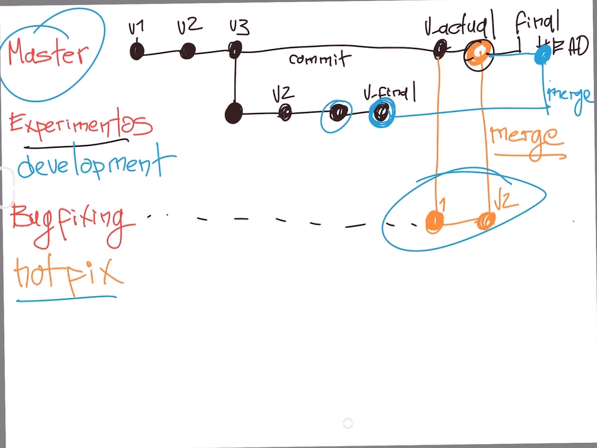

Branch/Rama sirve para hacer cambios totalmente a parte de la rama principal, para poder trabajar en cosas a parte para poder llegar a un resultado final despues y unir los cambios
merge combina las ramas creadas con la version actual para combinar los resultados
Experiments/Devoloper branch donde se hacen pruebas
hotfix rama donde se arreglan bugs y errores
